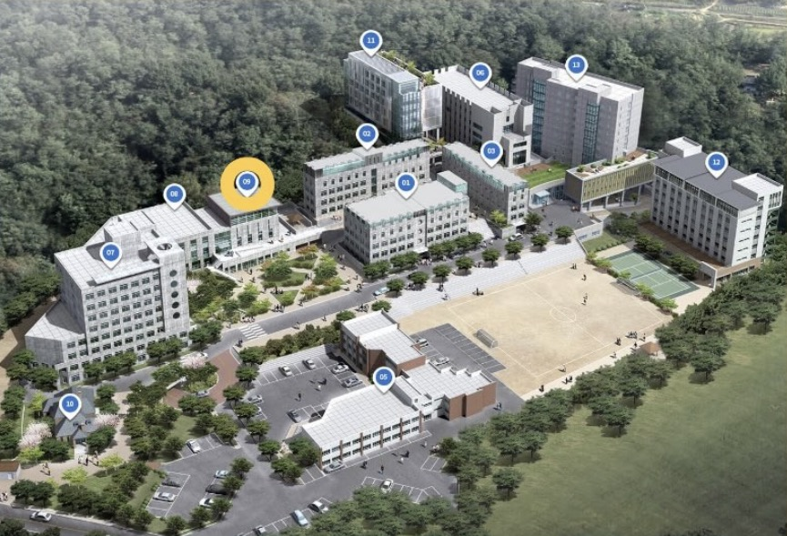

팜플렛 제작 계기
저희는 성공회대학교 민속문화연구회 탈의 부원들로, 이번 어울림 활동을 통해 풍물놀이를 일본어로 소개하는 콘텐츠를 제작하게 되었습니다. 마침 탈의 정기공연을 준비하면서, 교내 일본인 유학생분들도 공연에 조금 더 쉽게 다가오고 풍물놀이를 함께 즐길 수 있으면 좋겠다고 생각했습니다. 또한 풍물놀이를 처음 접하는 관객분들도 공연을 더욱 흥미롭게 감상할 수 있도록, 풍물놀이의 배경과 다양한 요소를 소개하고 공연을 즐기는 방법을 안내하는 자료가 있으면 좋겠다고 생각했습니다. 이러한 마음을 담아 풍물놀이를 소개하는 팜플렛과 카드뉴스를 제작했습니다. 이 자료가 풍물놀이를 처음 만나는 분들에게는 친근한 안내서가 되고, 이미 알고 계신 분들에게도 공연을 새로운 시선으로 즐기는 계기가 되기를 바랍니다. 인스타그램 @poong_mool에 접속하시면 풍물놀이 소개 카드뉴스를 확인하실 수 있습니다.
성공회대 민속문화연구회 탈
민속문화연구회 탈은 성공회대 유일한 풍물패로, 꽹과리, 징, 장구, 북, 소고가 모여 함께 판굿을 치는 동아리입니다. 고창농악을 계승하여 방학마다 고창농악전수관에서 사부님과 함께 고창농악을 배웁니다. 학교 내에서는 학교 축제, 정기공연을 하고 학교 밖에서는 다양한 연대공연을 합니다.
<지구별에 탈 났다>
안녕하세요 민속문화연구회 탈 입니다. 2026년 정기공연 <지구별에 탈 났다> 에 여러분을 초대합니다. 해가 지날수록 지구는 점점 뜨거워지고, 하늘에 구멍이 뚫린 듯 쏟아지는 비와 눈을 맞으며 기후위기의 시대를 살아가고 있습니다. 그 길 위에서 우리는 너른 논과 바다를 바라보며, 땅과 하늘 사이에서 굿을 칩니다. 자연과 공존하는 굿의 정신은 오늘날에도 유효합니다. 탈은 이러한 굿의 정신을 품고 매년 '기후정의행진'에 굿으로 연대해왔습니다. 그리고 오는 11월 22일, 2026년 탈의 정기공연에 우리의 이야기를 담았습니다. 우스갯소리로 '기후위기는 지구인들의 팀플'이라고 합니다. 때로는 거대한 자연과 자본, 세상 앞에서 무력해지기도 하지만, 그럼에도 가장 중요한 것은 마음을 모으고 희망을 잃지 않는 것, 그리고 서로의 손을 잡고 앞으로 나아가는 일입니다. 공연에 함께해 주신 여러분 모두 따뜻한 위로와 힘을 얻어가시길 바랍니다. 📝 시놉시스: 오랜만에 고향으로 내려온 기닥이의 귀에 들어온 어르신들의 이야기. 💬 땅이 갈라지고 샘이 말라 이제는 굿조차 칠 수 없게 되었다고...!? 💥 어릴 적 보았던 신명 나는 굿을 기억하는 기닥이는 마을을 위해 친구들을 하나둘 모으기 시작한다.🧑🤝🧑 📍 일시: 2026년 11월 22일 오후 4시 📍 장소: 성공회대학교 피츠버그홀
